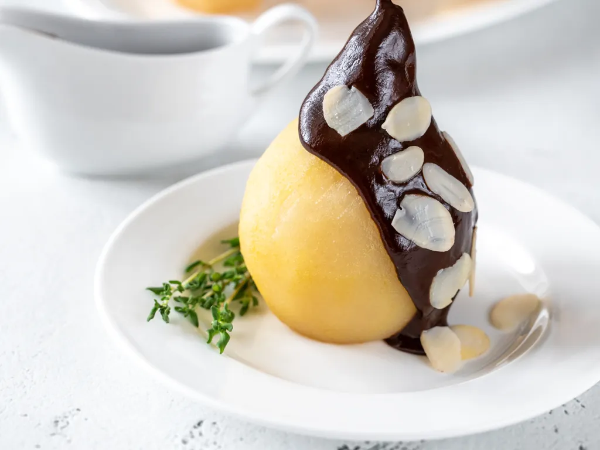

Poire Belle-Hélène

Qu'est-ce donc?
La poire Belle-Hélène est un dessert à base de poires pochées dans un sirop,
accompagnées d'une glace à la vanille et nappées de chocolat chaud.
Ingrédients
- Poire
- Glace à la vanille
- Chocolat
- Amandes effilées
Recette
- Faire fondre le chocolat
- Servir poire et glace
- Recouvrir de chocolat et d'amandes